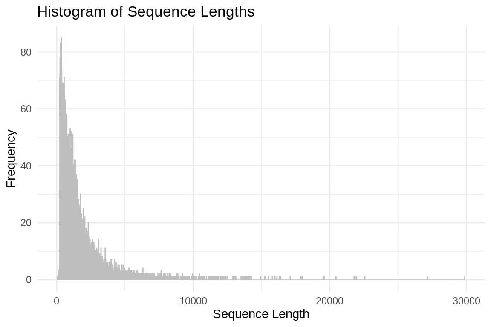
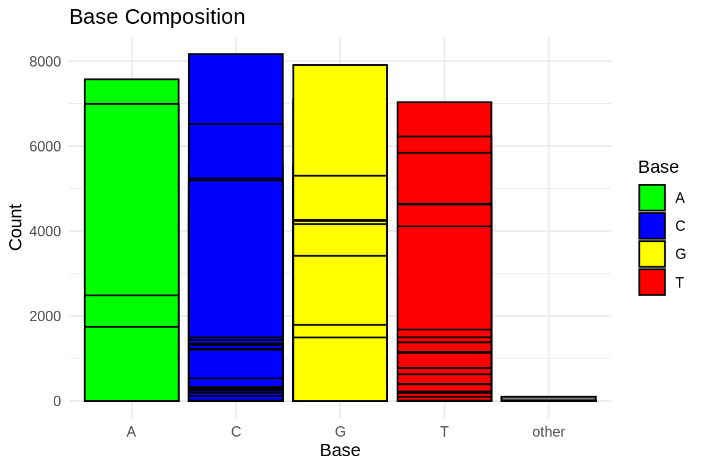
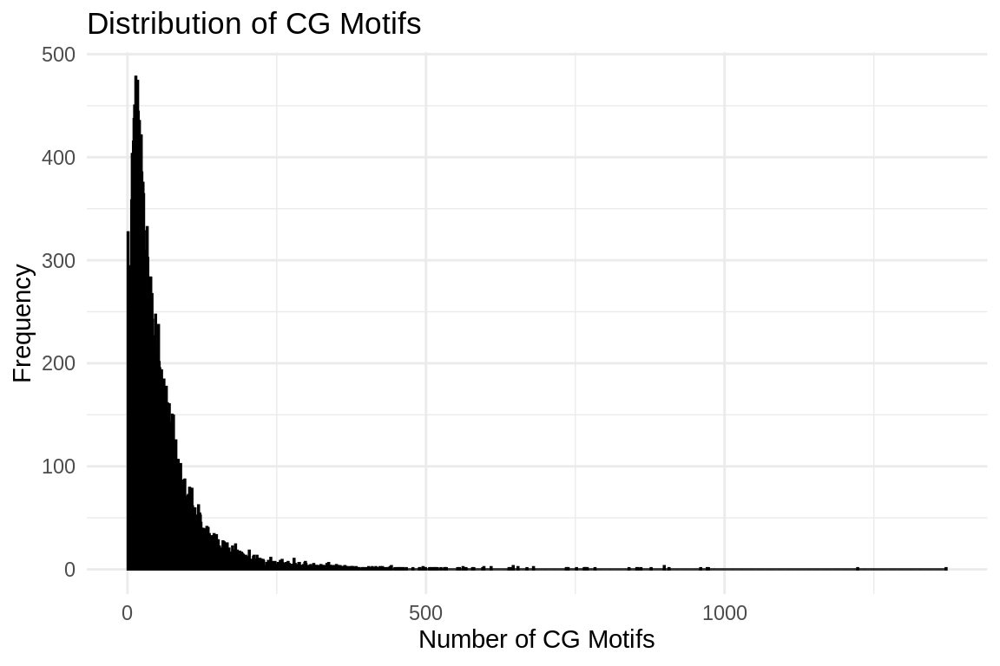

cd ../data
curl -O https://ftp.uniprot.org/pub/databases/uniprot/current_release/knowledgebase/complete/uniprot_sprot.fasta.gz
mv uniprot_sprot.fasta.gz uniprot_sprot_r2023_05.fasta.gz
gunzip -k uniprot_sprot_r2023_05.fasta.gzOh What a Blast!
Blasting SeaStar sequences against Swiss-Prot UniProt
Download Swiss-Prot
Need to see what release so to name correctly
 Naming
Naming uniprot_sprot_r2023_05
Will make blasdb directory that will git ignore…
mkdir ../blastdb
/home/shared/ncbi-blast-2.15.0+/bin/makeblastdb \
-in ../data/uniprot_sprot_r2023_05.fasta \
-dbtype prot \
-out ../blastdb/uniprot_sprot_r2023_05Lets look a query
head ../data/augustus.hints.codingseq>g3450.t1
ATGAACTACCGGACTGATGATGAAATATATGAAGATGAGGTGGACGAGGAGACAAAACTG
CATCACAGAATTGATGAGCGTGGAGTGAACGGAACTGATTCTCGAGATGAACCAACAAGA
GTTCCTCCAGCCAAGCAGCTGAAGATTCAAGCACCAGTATTGGCGTCTCGGCTCCAGCTG
GAAGCAGTGAGGCGGCCCCACCCCCCTCCTCTTCATCCTCCTCAGATCCACCTGTACCTA
GAACCACACCTAGAGGCATTACAACAGCGTTGTGATAGCTACAAAGGCATTGTTGGATAA
>g3451.t1
ATGAAGATCAACAAAGAAAAATCCAAAGTGATGCATTTGTCTCGCTGCAAAACACCCACG
GACGAGCATCTTCCACATTACACACTGCAAGAGACACAGAGCAAACTGTTCTGCAGACTG
AAGGGGCTGAGAGATTACAACTTTCGCAGTTTCATTCTGGCCTTTCTGCAGTACAATCCAecho "How many sequences are there?"
grep -c ">" ../data/augustus.hints.codingseqHow many sequences are there?
26581# Read FASTA file
fasta_file <- "../data/augustus.hints.codingseq" # Replace with the name of your FASTA file
sequences <- readDNAStringSet(fasta_file)
# Calculate sequence lengths
sequence_lengths <- width(sequences)
# Create a data frame
sequence_lengths_df <- data.frame(Length = sequence_lengths)
# Plot histogram using ggplot2
ggplot(sequence_lengths_df, aes(x = Length)) +
geom_histogram(binwidth = 1, color = "grey", fill = "blue", alpha = 0.75) +
labs(title = "Histogram of Sequence Lengths",
x = "Sequence Length",
y = "Frequency") +
theme_minimal()
# Read FASTA file
fasta_file <- "../data/augustus.hints.codingseq"
sequences <- readDNAStringSet(fasta_file)
# Calculate base composition
base_composition <- alphabetFrequency(sequences, baseOnly = TRUE)
# Convert to data frame and reshape for ggplot2
base_composition_df <- as.data.frame(base_composition)
base_composition_df$ID <- rownames(base_composition_df)
base_composition_melted <- reshape2::melt(base_composition_df, id.vars = "ID", variable.name = "Base", value.name = "Count")
# Plot base composition bar chart using ggplot2
ggplot(base_composition_melted, aes(x = Base, y = Count, fill = Base)) +
geom_bar(stat = "identity", position = "dodge", color = "black") +
labs(title = "Base Composition",
x = "Base",
y = "Count") +
theme_minimal() +
scale_fill_manual(values = c("A" = "green", "C" = "blue", "G" = "yellow", "T" = "red"))
# Read FASTA file
fasta_file <- "../data/augustus.hints.codingseq"
sequences <- readDNAStringSet(fasta_file)
# Count CG motifs in each sequence
count_cg_motifs <- function(sequence) {
cg_motif <- "CG"
return(length(gregexpr(cg_motif, sequence, fixed = TRUE)[[1]]))
}
cg_motifs_counts <- sapply(sequences, count_cg_motifs)
# Create a data frame
cg_motifs_counts_df <- data.frame(CG_Count = cg_motifs_counts)
# Plot CG motifs distribution using ggplot2
ggplot(cg_motifs_counts_df, aes(x = CG_Count)) +
geom_histogram(binwidth = 1, color = "black", fill = "blue", alpha = 0.75) +
labs(title = "Distribution of CG Motifs",
x = "Number of CG Motifs",
y = "Frequency") +
theme_minimal()
Running Blastx
/home/shared/ncbi-blast-2.15.0+/bin/blastx \
-query ../data/augustus.hints.codingseq \
-db ../blastdb/uniprot_sprot_r2023_05 \
-out ../analyses/11-sr_blast/Pyc_coding_blastx_sp.tab \
-evalue 1E-20 \
-num_threads 4 \
-max_target_seqs 1 \
-outfmt 6